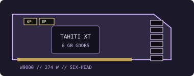

[ LEGACY WORKSTATION GRAPHICS ]
AMD FirePro W9000 6 GB
A 2012 Tahiti XT flagship professional graphics board engineered for workstation compute, visualization and large multi-display setups.

Recorded specifications
| GPU | Tahiti XT GCN; 2,048 stream processors. |
|---|---|
| Memory | 6 GB GDDR5, 384-bit memory interface. |
| Interface & power | PCI Express 3.0 x16; 274 W board-power class; one 6-pin and one 8-pin PCIe auxiliary connector. |
| Outputs | Six Mini DisplayPort 1.2 outputs; some boards also carry SDI-specific I/O. Verify the actual rear bracket, supported modes and adapter path. |
| Physical fit | Dual-slot, full-height reference card, approximately 275 × 111 mm. Confirm case length/slot clearance, airflow and both auxiliary power leads on the exact board. |
Workstation & driver compatibility
This high-end legacy FirePro requires a PCIe x16 slot, one 6-pin plus one 8-pin feed, a 275 W-class thermal/power budget and two adjacent expansion slots.
- Use AMD's archived professional driver only if W9000 and the target OS are explicitly listed; check the professional application's exact certified driver/workstation matrix.
- Validate OEM workstation PSU capacity, connector availability, cooling and system firmware. A physically compatible slot does not guarantee adequate power or airflow.
- Inspect MiniDP/SDI panel details, dual-slot cooler, both power connectors and firmware before operation. Keep any SDI workflow tied to the exact card variant.
Sources & further reading
- AMD — previous drivers and product supportOfficial archived driver source; verify W9000 and OS listing in the selected release.
- AMD — Radeon Pro Software for Enterprise 21.Q2 release notesOfficial release and professional-product/OS driver guidance.
- TechPowerUp GPU Database — FirePro W9000Independent specification cross-check; OEM implementation and physical board may vary.
Board power, dimensions and port set describe reference specifications; verify the exact board, PSU and chassis before service.